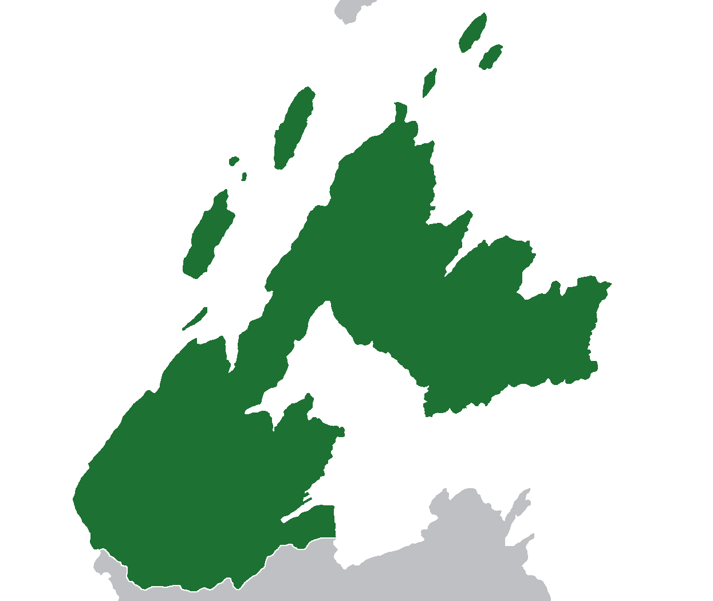
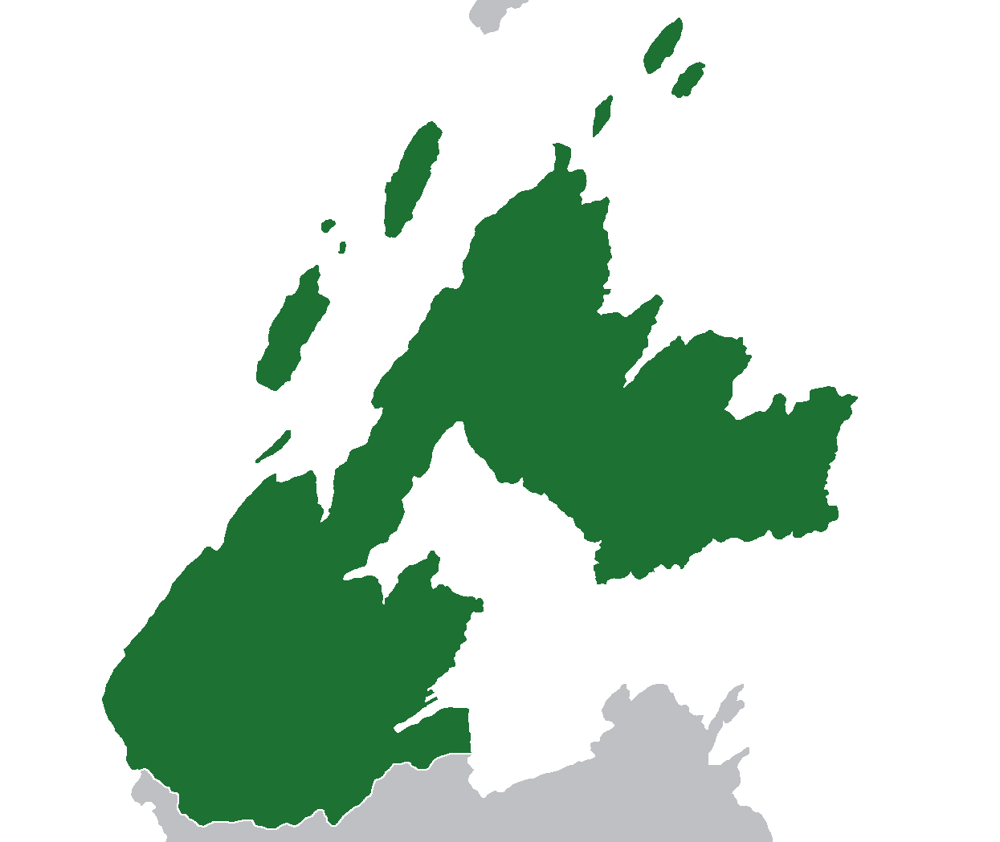

Medoles
Sérénissime république de Médoles (French)
 Flag of Medoles

Map of Medoles
Flag of Medoles

Map of Medoles
General Information
Geography
History
Demography
Medoles (/mɛˈdoʊlz/ MEH-DOHLS), officially the Most Serene Republic of Medoles, is a micronation in North America and an enclave inside Canada. The micronation is by Charleston Lake, at the heart of the Frontenac Axis region. It has a land area of approximately 0.25 square kilometers and a population of 3 as of 2024.
Founded on the 24th of January 2024, Medoles takes its name from Medoles Point, one of the key geographical features of the area. The name might have derived from the word medole, defined as soft and juicy essence of a plant. It likely relates to the soft nature of the soil at Medoles Point.
History
On the 24th of January 2024, the Most Serene Republic of Medoles was founded.
Geography
Medoles is an enclave surrounded by Canada in North America, within the province of Ontario and around 14 kilometers away from the Saint-Lawrence river. The micronation is located in the Frontenac Axis region, an extension of the Canadian shield. The area is relatively rocky and hilly and surrounded by the Charleston Lake in the West, East and North. Medoles Point and Buckhorn Point are some of the named geographical features of Medoles.
Symbols
- Flower: Herb-Robert (Geranium robertianum)
- Animal:
- Bird:

Picture of the herb-robert